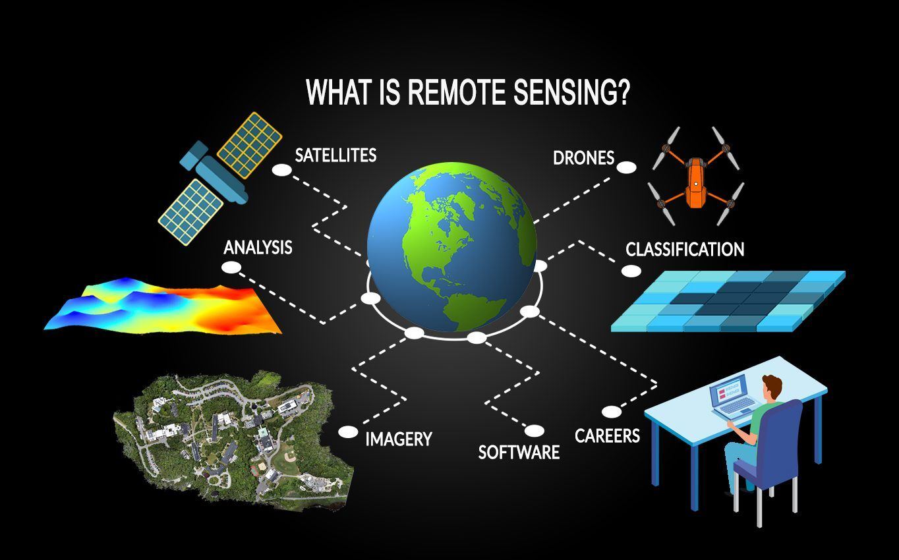

Data Monitoring

Weather Monitoring
Melting Rate Monitoring

Moraine Erosion Monitoring

GLOFs
A glacial lake outburst flood, or GLOF, is sudden release of water from a lake fed by glacier melt that has formed at the side, in front, within, beneath or on the surface of a glacier. It can be impounded by moraine complexes, glacial ice or even bedrock and, as a result of breaching, slope failure, overtopping or other failure mechanisms, can lead to catastrophic phenomena in the high mountains that threaten people’s lives, livelihoods and regional
The GLFS monitors and provides data on flooding in the Great Lakes region, helping to predict and manage flood risks.
Factors affecting flood risk include rainfall intensity, river flow rates, and soil saturation levels.
Real-time data is collected from various sensors and monitoring stations across the Great Lakes region.
Historical data helps in analyzing past flood events to improve prediction models and flood management strategies.